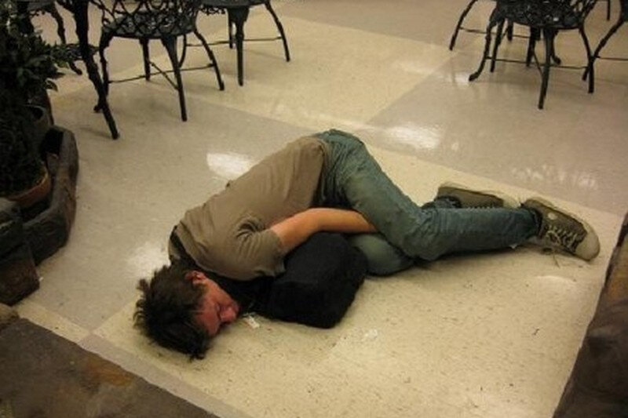

Jako lekarz-narkolog zapewniam, że każdy może przestać pić
Od ponad 20 lat pracuję jako narkolog w dużej klinice. W trakcie swojej praktyki pomogłem ogromnej liczbie osób w walce z nałogiem. Dosłownie uratowałem życie wielu z nich, ale nigdy bym nie pomyślał, że jedną z tych osób będzie mój syn. Długo nie byłem w stanie mu pomóc i prawie straciłem nadzieję. Udało mi się jednak znaleźć nową metodę. Teraz chcę opowiedzieć wszystkim, jak pozbyć się nałogu i nigdy więcej nie wracać do alkoholu.

Patrząc wstecz, widzę, że klinika, pacjenci, seminaria i kongresy były ważniejsze niż moja własna rodzina. Oddałem się całkowicie innym ludziom, zapominając o najbliższych. Być może dlatego mój syn stał się moim pacjentem - z podświadomego pragnienia zbliżenia się do mnie. Trudności rodzinne i nieporozumienia między bliskimi są jedną z głównych przyczyn alkoholizmu. To wtedy pojawiają się problemy z pracą, pieniędzmi, relacjami z ludźmi, odchyleniami psychologicznymi i fizjologicznymi.
Razem z żoną zrobiliśmy wszystko, aby zapewnić naszemu synowi dobre wykształcenie i godne życie. Dopiero teraz rozumiem, że brakowało mu ojca. Spróbował alkoholu na studiach i nie mógł przestać. Na początku udawało mu się ukryć problem z alkoholem...
Pamiętam dzień, kiedy zadzwonili do mnie i otworzyli mi oczy. Pół roku temu mojego syna wyrzucili ze studiów i zaczął pić codziennie. Potem było tylko gorzej – rzuciła go dziewczyna, pijackie bójki w barach, niemoralne zachowanie i pierwsze problemy z prawem, a ja tego wszystkiego nie wiedziałem i nawet się nie domyśliłem...

Przed nami były dwa lata trudnej rehabilitacji. Zrobiłem wszystko, żeby mu pomóc. Syn się leczył, oczyszczał krew, przechodził kursy psychoterapii. Z biegiem czasu zauważalna była poprawa. Niestety po zakończeniu terapii natychmiast udał się do baru. Najgorsze wcale nie było to, że ludzie przestali mi ufać, bo nie mogłem wyleczyć własnego syna, ale to, że byłem naprawdę bezsilny i moje dziecko codziennie się zatruwało i rujnowało swoje życie.
Z biegiem czasu psycholog pomógł naprawić naszą relację. Syn przyznał, że nie jest już na mnie zły. Po prostu rzucenie alkoholu było ponad jego siły. Jakby ktoś go do tego zmuszał. Oznacza to, że problem nie był psychologiczny, było to fizyczne uzależnienie, którego oficjalnie nie można było w żaden sposób się pozbyć. Oczywiście wiedziałem, że to może się zdarzyć. Nie pomogły tradycyjne metody leczenia, które są praktykowane na całym świecie... Wtedy zacząłem szukać gdzie indziej.

Na jednej z konferencji online, jako ostatni zabrał głos nieznany mi wcześniej narkolog na temat, którego właśnie potrzebowałem. Nowy lek, który wykazał wyjątkową skuteczność w leczeniu alkoholizmu, został już zaakceptowany w krajach sąsiednich.

Oto czego się dowiedziałem. nie zawiera blokerów, środków uspokajających ani innych szkodliwych substancji. Zawiera wyłącznie naturalne ekstrakty, które leczą uzależnienie od alkoholu:
- rozwijają naturalną reakcję na alkohol;
- poprawiają funkcjonowanie mózgu;
- łagodzą objawy odstawienia alkoholu;
- poprawiają stan emocjonalny, usuwając oznaki agresji i depresji;
- oczyszczają krew i naczynia krwionośne;
- usuwają z organizmu substancje toksycze.
Jako specjaliście z dość długim stażem pracy trudno było mi w to uwierzyć.Taki efekt można osiągnąć bez farmakologii, ale tylko przy bardzo ciężkiej pracy. Ponieważ wypróbowałem wszystkie znane metody i nie pomogły, zdecydowałem się podać synowi.
Mój syn pił codziennie przed dwa tygodnie. Rano, żeby złagodzić kaca, dałem mu . Godzinę później wstał, wziął prysznic i zszedł na śniadanie. Po raz pierwszy od dłuższego czasu nie czuł się źle. Rzeczywiście, ręce mu się nie trzęsły, głos był równy, źrenice normalne. Ani śladu kaca. Nawet żartował i uśmiechał się, jakby wczoraj nie leżał pijany w kałuży własnych wymiocin…

Po dwóch tygodniach przyjmowania leku syn nie złamał się, prowadził normalne życie. Zbadaliśmy krew i jego wyniki mnie zaskoczyły - wszystkie wskaźniki w normie, krew wolna od toksyn i zanieczyszczeń. A co najważniejsze, syn przestał pić. Czy na długo? Okazało się, że tak.
Tydzień później przyznał, że nie wierzył, że nowa kuracja pomoże, zaczął ją przyjmować tylko ze względu na mnie. A potem po prostu przestał myśleć o alkoholu. Pojawiły się pozytywne myśli, jego stan się poprawił. Planuj znaleźć pracę i wrócić na studia od przyszłego roku.
Minęło pół roku kuracji . W tym czasie ani razu nie tknął alkoholu i wrócił do normalnego życia. Teraz jestem w stanie pomóc nawet tym, których uważałem za beznadziejny przypadek. Udało mi się zorganizować dostawę do naszego kraju. Ale to nie koniec! Teraz każdy może go zamówić bezpośrednio na stronie producenta bez dodatkowych kosztów.

Jeśli Ty lub Twoi bliscy nie potraficie pozbyć się nałogu i praktycznie straciliście nadzieję... Musicie pamiętać, że zawsze jest wyjście! Ja sam niedawno tego doświadczyłem, chociaż myślałem, że mi to się nigdy nie przytrafi. W życiu są różne okoliczności. Wiem, ile ludzie wydają na leczenie. W większości przypadków takie pieniądze nie są dostępne dla 85% pacjentów. Chcę pomóc wszystkim, dlatego zorganizowałem 50% zniżki na . Kupując ten środek, na zawsze pożegnasz się z alkoholem.